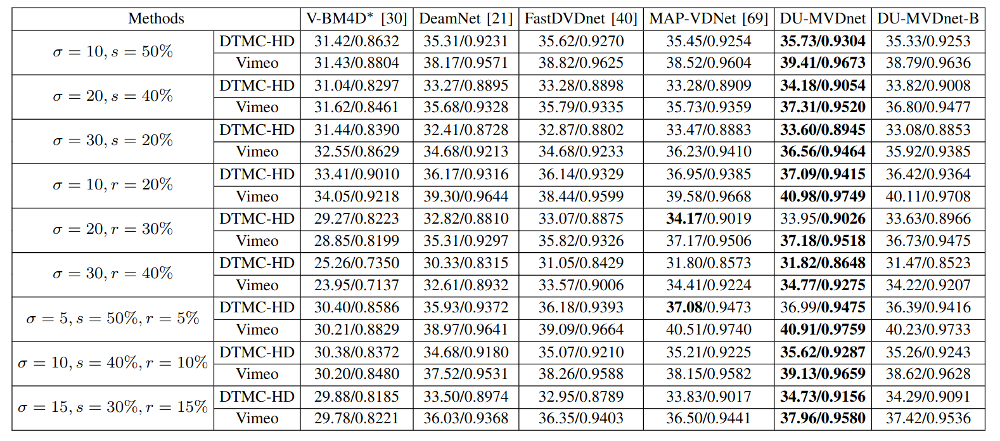
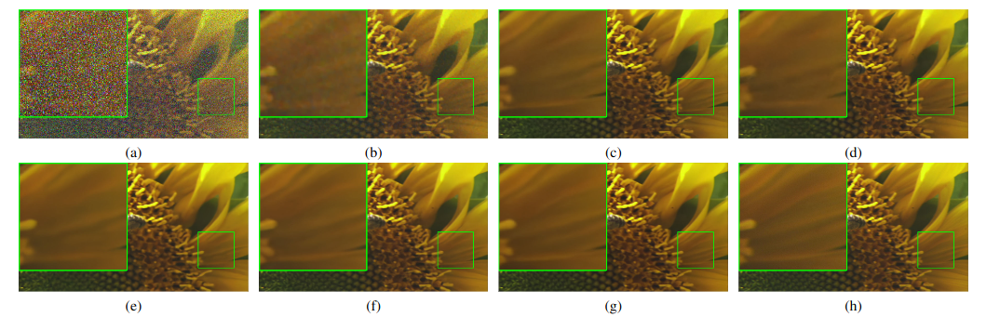
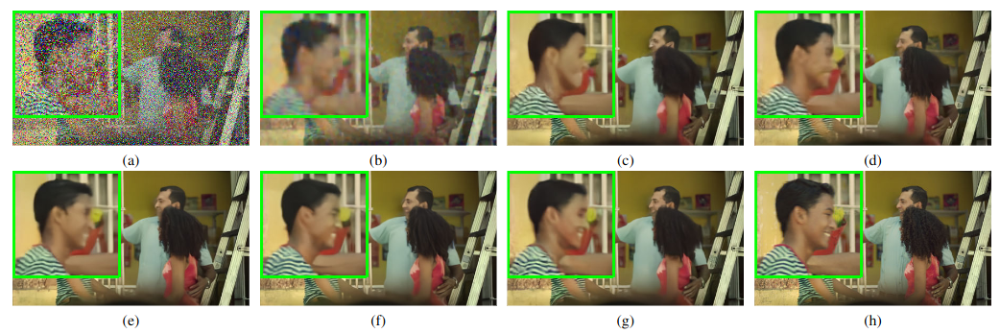
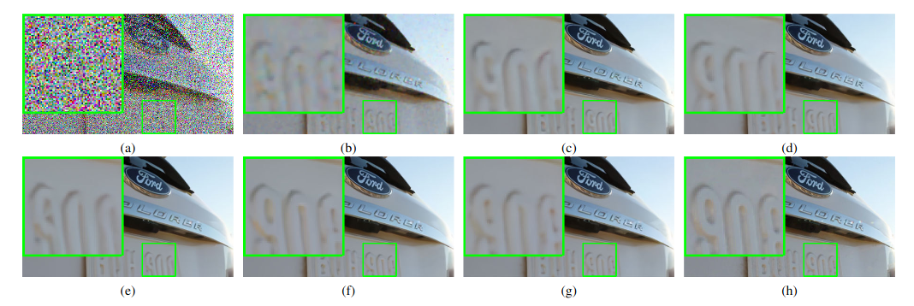
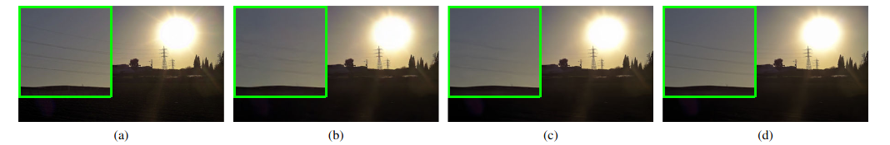

Abstract
Existing image and video denoising algorithms have focused on removing homogeneous Gaussian noise. However, this assumption with noise modeling is often too simplistic for the characteristics of real-world noise. Moreover, the design of net- work architectures in most deep learning-based video denoising methods is heuristic, ignoring valuable domain knowledge. In this paper, we propose a model-guided deep unfolding network for the more challenging and realistic mixed noise video denoising problem, named DU-MVDnet. First, we develop a novel observa- tion model/likelihood function based on the correlations among adjacent degraded frames. In the framework of Bayesian deep learning, we introduce a deep image denoiser prior and obtain an iterative optimization algorithm based on the maximum a posterior (MAP) estimation. To facilitate end-to-end optimization, the iterative algorithm is transformed into a deep convolutional neural network (DCNN)-based implementation. Furthermore, recognizing the limitations of traditional motion estimation and compensation methods, we propose an efficient multistage recur- sive fusion strategy to exploit temporal dependencies. Specifically, we divide video frames into several overlapping groups and progressively integrate these frames into one frame. Toward this objective, we implement a multiframe adaptive aggregation operation to integrate feature maps of intragroup with those of intergroup frames. Extensive experimental results on different video test datasets have demonstrated that the proposed model- guided deep network outperforms current state-of-the-art video denoising algorithms such as FastDVDnet and MAP-VDNet.
Paper & Code & Demo
Experimental Results
TABLE I: Average PSNR/SSIM results of mixed video noise removal (AWGN + SPIN, AWGN + RVIN and AWGN + SPIN + RVIN) in DTMC-HD and Vimeo datasets at different noise levels (boldface highlights the best).
Result Visualization
-

Figure 1. Denoising results for a noisy frame of Sunflower video of the DTMC-HD test set with mixed noise level of σ = 20, s = 40%. (a) Noisy frame; denoised by (b) V-BM4D∗ [30] (30.49 dB, 0.8658), (c) DeamNet [21] (35.24 dB, 0.9224), (d) FastDVDnet [40] (34.71 dB, 0.9207), (e) MAP-VDNet [69] (34.90 dB, 0.9224), (f) DU-MVDnet (36.16 dB, 0.9323) and (g) DU-MVDnet-B (34.08 dB, 0.9267); (h) Original frame.
Figure 2. Denoising results for a noisy frame from the Vimeo test set with a mixed noise level of σ = 30, r = 40%. (a) Noisy frame; denoised by (b) V-BM4D∗ [30] (22.47 dB, 0.6847), (c) DeamNet [21] (28.37 dB, 0.8503), (d) FastDVDnet [40] (29.18 dB, 0.8729), (e) MAP-VDNet [69] (30.08 dB, 0.8922), (f) DU-MVDnet (30.43 dB, 0.9015) and (g) DU-MVDnet-B (29.97 dB, 0.8914); (h) Original frame.
Figure 3. Denoising results for a noisy frame from the Vimeo test set with the mixed noise level of σ = 15, s = 30%, r = 15%. (a) Noisy frame; denoised by (b) V-BM4D∗ [30] (30.67 dB, 0.8800), (c) DeamNet [21] (36.93 dB, 0.9600), (d) FastDVDnet [40] (36.26 dB, 0.9558), (e) MAP-VDNet [69] (37.37 dB, 0.9634), (f) DU-MVDnet (38.21 dB, 0.9688) and (g) DU-MVDnet-B (37.56 dB, 0.9652); (h) Original frame.
Figure 4. Denoising results for a compressed and noisy frame from the Vimeo test set with the mixed and compressed noise level of σ = 10, r = 20%, QP = 32. (a) Original frame; frame enhanced by (b) FastDVDnet [40] (39.88 dB, 0.9590), (c) MAP-VDNet [69] (40.98 dB, 0.9636) and (d) DU-MVDnet (41.57 dB, 0.9670).
Citation
@ARTICLE{10050095,
author={Sun, Lu and Wang, Yichen and Wu, Fangfang and Li, Xin and Dong, Weisheng and Shi, Guangming},
journal={IEEE Transactions on Circuits and Systems for Video Technology},
title={Deep Unfolding Network for Efficient Mixed Video Noise Removal},
year={2023},
volume={33},
number={9},
pages={4715-4727},
doi={10.1109/TCSVT.2023.3244187}
}
Concat
Lu Sun, Email: unlu@stu.xidian.edu.cn
Yichen Wang,, Email: yichenwang@stu.xidian.edu.cn
Fangfang Wu, Email: wufangfang@xidian.edu.cn
Xin Li, Email: xin.li@mail.wvu.edu
Weisheng Dong, Email: wsdong@mail.xidian.edu.cn
Guangming Shi, Email: gmshi@xidian.edu.cn